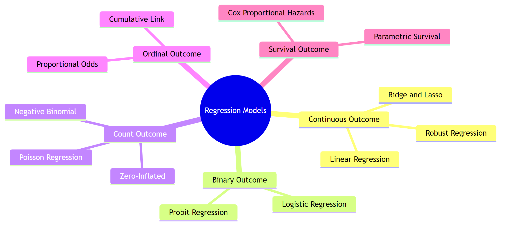
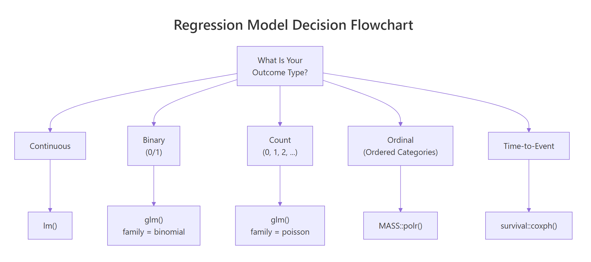
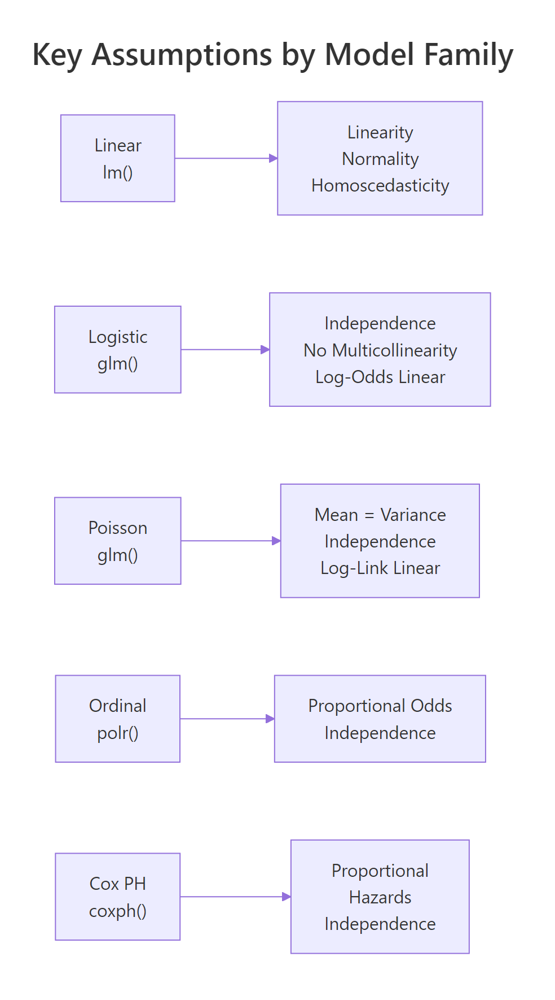

Which Regression Model in R? A Decision Framework From Data Type to Final Choice
Choosing the right regression model starts with one question: what type of outcome are you predicting? This guide maps five outcome types, continuous, binary, count, ordinal, and time-to-event, to their R functions, key assumptions, and diagnostic checks.
Introduction
You know lm() for continuous outcomes and maybe glm() for binary ones. But what happens when your outcome is a count of hospital visits, an ordered satisfaction rating, or the time until a machine fails? The wrong model doesn't always throw an error, it silently gives misleading estimates.
The right regression model depends on three things: the type of outcome variable, the distribution of that outcome, and the research question you're answering. Get the first decision wrong and everything downstream is unreliable.
By the end of this guide you'll be able to identify your outcome type, pick the correct model family, fit it in R using base functions and a few standard packages, and verify that the model's assumptions hold. All code runs in your browser, no local setup needed.
What Are the Five Outcome Types That Determine Your Regression Model?
Every regression problem starts with the same question: what does your outcome variable look like? The answer falls into one of five categories, and each one points to a different model family.

Figure 1: Overview of regression model families organized by outcome type.
Here are the five outcome types with concrete examples:
- Continuous, a numeric value on a real-number scale. Examples: blood pressure, house price, temperature. Model: linear regression with
lm(). - Binary, exactly two categories (yes/no, survived/died, 0/1). Model: logistic regression with
glm(family = binomial). - Count, non-negative integers representing how many times something happened. Examples: number of claims, website visits, species sightings. Model: Poisson regression with
glm(family = poisson). - Ordinal, ordered categories where the distance between levels is unknown. Examples: pain severity (none/mild/moderate/severe), Likert scales. Model: proportional odds with
MASS::polr(). - Time-to-event, duration until something happens, often with censoring (some subjects haven't experienced the event yet). Examples: time to relapse, equipment lifetime. Model: Cox regression with
survival::coxph().
Let's create small datasets that represent each type so you can see them side by side.
The lung dataset records survival time in days and whether the patient died (status = 2) or was censored (status = 1). This is the hallmark of time-to-event data, not every subject experiences the event during the study.
Try it: The variable chickwts$weight records the weight of chicks fed different diets. What outcome type is this, continuous, binary, count, ordinal, or time-to-event?
Click to reveal solution
Explanation: Weight is a numeric measurement on a real-number scale with no natural upper bound, making it a continuous outcome suited for lm().
How Does Linear Regression Handle Continuous Outcomes?
Linear regression is the starting point for continuous outcomes. It fits a straight line (or plane, with multiple predictors) that minimises the squared distance between observed and predicted values.
The model assumes four things: (1) the relationship between predictors and outcome is linear, (2) residuals are normally distributed, (3) residuals have constant variance (homoscedasticity), and (4) observations are independent of each other.
Let's predict fuel efficiency from weight and horsepower using the mtcars dataset.
Each unit increase in weight (1,000 lbs) is associated with a 3.88 mpg decrease, holding horsepower constant. The model explains about 83% of the variance in fuel efficiency.
The intuition behind OLS is straightforward. The model minimises this cost function:
$$J(\beta) = \sum_{i=1}^{n} (y_i - \hat{y}_i)^2$$
Where $y_i$ is the observed value, $\hat{y}_i$ is the predicted value, and $n$ is the number of observations. Smaller values mean better fit.
If you're not interested in the math, skip ahead, the practical code above is all you need.
Now let's check the assumptions with diagnostic plots.
In the residuals-vs-fitted plot, look for a flat, random scatter around zero. Any curved pattern suggests non-linearity. In the Q-Q plot, points should follow the diagonal line. Deviations at the tails indicate non-normal residuals.
plot() on any lm object produces four diagnostic plots. The first two (residuals vs fitted and Q-Q) catch most problems.Try it: Fit a linear model predicting Sepal.Length from Petal.Width using the iris dataset. What is the R-squared?
Click to reveal solution
Explanation: Petal width alone explains about 67% of the variation in sepal length. The summary()$r.squared extracts just the R-squared value.
When Should You Use Logistic Regression for Binary Outcomes?
When the outcome has exactly two levels, pass/fail, yes/no, alive/dead, logistic regression is the standard choice. It models the probability of the outcome being 1 (the "success" class) as a function of the predictors.
The key idea is the logistic function, which transforms a linear combination of predictors into a probability between 0 and 1:
$$P(Y = 1) = \frac{1}{1 + e^{-(\beta_0 + \beta_1 x_1 + \dots + \beta_p x_p)}}$$
Where $\beta_0$ is the intercept and $\beta_1 \dots \beta_p$ are the coefficients. The model estimates coefficients on the log-odds scale, not the probability scale.
If you're not interested in the math, the takeaway is simple: logistic regression outputs probabilities between 0 and 1.
Let's predict whether a car has a manual transmission (am = 1) from its weight.
The coefficient for weight is -4.02 on the log-odds scale. That means heavier cars are much less likely to have manual transmissions. But log-odds are hard to interpret directly. Let's convert to odds ratios.
An odds ratio of 0.018 for weight means each 1,000-lb increase multiplies the odds of manual transmission by 0.018, a 98% decrease. The confidence interval (0.001 to 0.31) doesn't include 1, confirming statistical significance.
exp(coef(model)). Reporting raw coefficients like -4.02 as "the effect" misleads your audience.Try it: Fit a logistic regression predicting vs (engine shape: 0 = V-shaped, 1 = straight) from wt using mtcars. What is the odds ratio for weight?
Click to reveal solution
Explanation: Each 1,000-lb increase in weight multiplies the odds of a straight engine by about 0.56, meaning heavier cars are less likely to have straight engines.
How Do You Model Count Data with Poisson Regression?
Count data, how many times something happened, calls for Poisson regression. The outcome is a non-negative integer (0, 1, 2, 3, ...) and the model assumes the mean equals the variance.
The warpbreaks dataset records the number of breaks in yarn during weaving. Let's model breaks as a function of wool type and tension.
Wool B has about 19% fewer breaks than wool A (since $e^{-0.206} \approx 0.81$). High tension reduces breaks by about 40% compared to low tension.
The most common problem with Poisson regression is overdispersion, the variance is larger than the mean. Let's check.
The dispersion ratio is 4.2, well above the expected 1.0 for Poisson. The negative binomial model produces the same coefficient estimates but with wider (more honest) standard errors. Notice how the z-values dropped, reflecting the greater uncertainty.
MASS::glm.nb(). Ignoring overdispersion gives artificially small p-values that make everything look significant.Try it: Fit a Poisson regression predicting breaks from tension alone (no wool) and compute the dispersion ratio. Is it overdispersed?
Click to reveal solution
Explanation: The dispersion ratio of 4.7 far exceeds 1.0, confirming overdispersion. You should use negative binomial instead.
What Is Ordinal Regression and When Do You Need It?
Ordinal outcomes have ordered categories where the exact distance between levels is unknown. Examples include pain severity (none < mild < moderate < severe), education level, or customer satisfaction ratings.
The standard approach is proportional odds logistic regression, fitted with MASS::polr(). It models the cumulative probability of being at or below each category level, assuming the effect of each predictor is the same across all cutpoints (the proportional odds assumption).
Let's create an ordinal dataset and fit the model.
Now let's fit the proportional odds model.
Both age and income significantly predict satisfaction level. Each additional year of age increases the odds of being in a higher satisfaction category by about 3% ($e^{0.031} \approx 1.031$).
Try it: Using the ord_data we just created, fit an ordinal model predicting satisfaction from age alone (no income). Is age still significant?
Click to reveal solution
Explanation: Age remains significant even without income in the model, with a t-value above 2 and p-value well below 0.05.
How Does Cox Regression Handle Time-to-Event Data?
Survival analysis applies when your outcome is the time until an event, death, relapse, machine failure, customer churn. The key complication is censoring: some subjects haven't experienced the event by the end of the study. You can't just drop them or treat their last-known time as the event time.
Cox proportional hazards regression estimates hazard ratios, the relative risk of the event happening at any given time, without specifying the baseline hazard function. It requires the survival package, which is bundled with every R installation.

Figure 2: Decision flowchart: from outcome type to R function.
Let's fit a Cox model to the lung dataset, which records survival of patients with advanced lung cancer.
The hazard ratio for sex is 0.58, meaning females (sex = 2) have 42% lower hazard of death compared to males. Each unit increase in ECOG performance score increases the hazard by 59%.
The proportional hazards assumption is critical, it means the hazard ratio between any two groups stays constant over time. Let's test it.
A significant p-value (< 0.05) indicates a violation. Here, age shows some evidence of non-proportional hazards (p = 0.017). In practice, you might stratify by age groups or add a time-interaction term to address this.
survfit() on the model object.Try it: Fit a Cox model on the lung dataset using age and sex as predictors (no ph.ecog). What is the hazard ratio for sex?
Click to reveal solution
Explanation: The hazard ratio of 0.59 for sex means females have about 41% lower hazard of death compared to males, after adjusting for age.
How Do You Choose Between Competing Models?
Once you've identified the correct model family, you often need to choose between competing specifications, different sets of predictors, interaction terms, or distributional assumptions.

Figure 3: Key assumptions to verify for each model family.
Here are the three main tools for model comparison within a family.
AIC (Akaike Information Criterion) balances model fit against complexity. Lower AIC is better. It works for any model fitted with maximum likelihood, including lm(), glm(), and polr().
Likelihood ratio test compares nested models, one must be a special case of the other. Use anova() with test = "Chisq" for GLMs.
Residual diagnostics reveal whether the model's assumptions hold. No single number replaces visual inspection of residuals.
Let's compare two nested linear models.
Model B (with weight, horsepower, and cylinders) has a lower AIC (155.5 vs 166.0) and the likelihood ratio test rejects the null hypothesis that the simpler model is sufficient (p = 0.001). The extra predictors earn their keep.
Here is a quick-reference table summarising everything:
| Outcome Type | R Function | Key Assumption | Diagnostic Check |
|---|---|---|---|
| Continuous | lm() |
Normal residuals, constant variance | plot(model) |
| Binary (0/1) | glm(family = binomial) |
Log-odds are linear in predictors | Hosmer-Lemeshow, ROC |
| Count (0, 1, 2...) | glm(family = poisson) |
Mean equals variance | Dispersion ratio |
| Ordinal | MASS::polr() |
Proportional odds | Compare binary splits |
| Time-to-event | survival::coxph() |
Proportional hazards | cox.zph() |
| Overdispersed count | MASS::glm.nb() |
Variance > mean | Compare with Poisson AIC |
Try it: Fit two models, mpg ~ wt and mpg ~ wt + disp, on mtcars. Which has the lower AIC? Is the difference meaningful?
Click to reveal solution
Explanation: The AIC difference is less than 2, which means disp adds essentially no useful information beyond what wt already provides. Stick with the simpler model.
Common Mistakes and How to Fix Them
Mistake 1: Using lm() on a binary outcome
❌ Wrong:
Why it is wrong: Linear regression on a binary outcome produces predicted probabilities below 0 or above 1, which are nonsensical. A predicted probability of -0.35 has no meaning.
✅ Correct:
Mistake 2: Ignoring overdispersion in Poisson regression
❌ Wrong:
Why it is wrong: When variance exceeds the mean, Poisson standard errors are too narrow. This inflates z-statistics and makes non-significant effects appear significant.
✅ Correct:
Mistake 3: Treating ordinal outcomes as continuous
❌ Wrong:
Why it is wrong: This assumes equal spacing between categories (the jump from low to medium equals the jump from medium to high). It also allows predicted values like 1.7, which don't correspond to any category.
✅ Correct:
Mistake 4: Forgetting to check proportional hazards in Cox models
❌ Wrong:
Why it is wrong: If the proportional hazards assumption is violated, the hazard ratios are averaged over time and may not represent the actual relationship at any specific time point.
✅ Correct:
Mistake 5: Comparing AIC across different outcome types
❌ Wrong:
Why it is wrong: AIC values are only comparable between models fit to the same outcome variable with the same likelihood function. Comparing a continuous-outcome AIC to a binary-outcome AIC is like comparing kilograms to kilometres.
✅ Correct:
Practice Exercises
Exercise 1: Identify the model and fit it
The InsectSprays dataset has a count column (number of insects) and a spray column (type A-F). Identify the correct regression family, fit the model, and check whether the Poisson assumption holds.
Click to reveal solution
Explanation: The count outcome points to Poisson regression. The dispersion ratio of 1.67 suggests mild overdispersion. The negative binomial model has a substantially lower AIC (380 vs 409), confirming it's the better choice for these data.
Exercise 2: Poisson vs negative binomial showdown
Using the warpbreaks dataset, fit both a Poisson and a negative binomial model with breaks ~ wool * tension (including the interaction). Compare their AIC values, dispersion diagnostics, and coefficient significance. Which model would you report and why?
Click to reveal solution
Explanation: The negative binomial model wins decisively: lower AIC (326 vs 469), and the Poisson dispersion ratio of 3.4 confirms overdispersion. The negative binomial gives wider, more honest standard errors. The interaction terms may lose significance in the negative binomial, this is correct, not a flaw.
Exercise 3: Full pipeline, from data to interpretation
You receive a dataset of patients where the outcome is 30-day mortality (1 = died, 0 = survived) with predictors age and treatment group. Complete the full pipeline: identify the outcome type, fit the right model, interpret the coefficients as odds ratios with confidence intervals, and check if treatment significantly reduces mortality.
Click to reveal solution
Explanation: The binary outcome (died: 0/1) requires logistic regression. The drug treatment's odds ratio is about 0.48, suggesting the drug roughly halves the odds of death. However, the 95% CI barely touches 1.0, so the evidence is borderline. With more patients, the effect would likely become clearly significant.
Putting It All Together
Let's walk through a complete decision-making pipeline from scratch. You have a research question, data, and need to arrive at a final, defensible model.
Scenario: You're analysing the lung dataset to understand which patient characteristics predict survival time in advanced lung cancer.
Here is the interpretation. The outcome is time-to-death with censoring, so Cox regression is the right tool. After fitting and checking assumptions, we simplify to two predictors. Female patients have 42% lower hazard (HR = 0.58, 95% CI: 0.42-0.79). Each unit increase in ECOG score increases hazard by 59% (HR = 1.59, 95% CI: 1.24-2.03). The simpler model has a lower AIC (1474 vs 1478) and no proportional hazards violations.
Summary
| Decision Point | Question to Ask | What to Do |
|---|---|---|
| Outcome type | Is it continuous, binary, count, ordinal, or time-to-event? | Match to model family (see table below) |
| Model fit | Does the model explain the data? | Check R-squared, deviance, concordance |
| Assumptions | Do residuals behave properly? | Plot diagnostics, run formal tests |
| Overdispersion | Is variance > mean for counts? | Switch to negative binomial |
| Proportional odds | Same effect across cutpoints? | Compare binary splits |
| Proportional hazards | Constant hazard ratio over time? | Run cox.zph() |
| Model comparison | Which specification is best? | AIC for non-nested, LR test for nested |
Quick-reference: outcome type to R function:
| Outcome | Function | Package |
|---|---|---|
| Continuous | lm() |
base |
| Binary | glm(family = binomial) |
stats |
| Count | glm(family = poisson) |
stats |
| Overdispersed count | glm.nb() |
MASS |
| Ordinal | polr() |
MASS |
| Time-to-event | coxph() |
survival |
FAQ
Can I use linear regression if my outcome is bounded between 0 and 1?
Not with standard lm(). Predictions can fall outside the 0-1 range, which is nonsensical for proportions. Use beta regression (betareg package) for continuous proportions, or logistic regression if the outcome is truly binary.
What is the difference between logistic and probit regression?
Both model binary outcomes but use different link functions. Logistic uses the logit link (log-odds), probit uses the inverse normal CDF. In practice, they give nearly identical predictions. Logistic is more common because odds ratios have an intuitive interpretation.
When should I use negative binomial instead of Poisson?
When the dispersion ratio (residual deviance / residual df) substantially exceeds 1.0. A ratio above 1.5 suggests overdispersion. Negative binomial adds a parameter that allows the variance to exceed the mean, producing more reliable standard errors.
How do I handle zero-inflated count data?
Zero-inflated data has more zeros than a Poisson or negative binomial model expects. Use pscl::zeroinfl() to fit a zero-inflated model. It combines a logistic model for the "excess zeros" process with a count model for the regular counts.
Can I use Cox regression with time-varying covariates?
Yes. The survival package supports time-varying covariates by restructuring data into start-stop format with tmerge() or by specifying time-dependent terms in the model formula. This is an advanced topic covered in the survival package vignettes.
References
- R Core Team, An Introduction to R. Link
- Hosmer, D.W., Lemeshow, S. & Sturdivant, R.X., Applied Logistic Regression, 3rd Edition. Wiley (2013).
- Cameron, A.C. & Trivedi, P.K., Regression Analysis of Count Data, 2nd Edition. Cambridge University Press (2013).
- Agresti, A., Analysis of Ordinal Categorical Data, 2nd Edition. Wiley (2010).
- Therneau, T.M. & Grambsch, P.M., Modeling Survival Data: Extending the Cox Model. Springer (2000).
- Venables, W.N. & Ripley, B.D., Modern Applied Statistics with S, 4th Edition. Springer (2002). Link
- glm() documentation, R Stats Package. Link
- survival package documentation, CRAN. Link
- Harrell, F.E., Regression Modeling Strategies, 2nd Edition. Springer (2015). Link
- Fox, J., Applied Regression Analysis and Generalized Linear Models, 3rd Edition. Sage (2016).
Continue Learning
- Which Statistical Test in R? A Decision Flowchart, the parent guide that covers hypothesis tests, not just regression models
- Linear Regression in R, deep dive into OLS with diagnostics, transformations, and feature selection
- Logistic Regression in R, complete walkthrough of binary classification with ROC curves and model evaluation